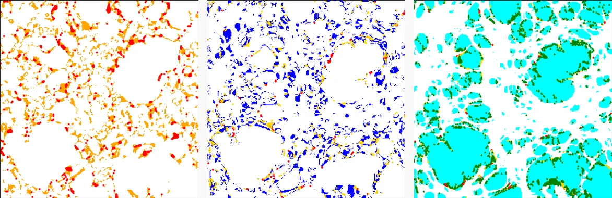

Raffael Jonas
MSc student in Astronomy, University of Vienna
Vienna, Austria
About
I'm 26, and a Master’s student in Astronomy at the Department of Astrophysics, University of Vienna, where I’m part of the Data Science in Astrophysics & Cosmology group of Prof. Oliver Hahn.
I’m interested in structure formation: how gravity grew the tiny density fluctuations of the early universe into the galaxies, clusters, and cosmic web we see today. Most of that structure is dark matter, which we can’t observe directly, so I’m especially interested in how well galaxies and other tracers actually reflect where the matter is. This includes how galaxies cluster, both across large cosmic scales and within individual dark matter halos, and what that reveals about the physics shaping them. I’m drawn to a computational approach to all of this: running simulations and semi-analytical models, and using what they reveal to test theoretical predictions and connect with real observational data.
Another interest of mine is the forefront of machine learning in cosmology: field-level inference and large cosmological simulation suites that reveal the impact of different dark matter models and hydrodynamical choices. Recent advances in computational power, enabling fast, high-resolution simulations, make this an exciting time to work in the field.
My goal is to pursue a career in academia: meeting people from around the world to exchange knowledge, and push the field forward toward a better understanding of how our universe came to be.
I'm currently looking for PhD positions starting in 2027, ideally at the intersection of computational cosmology, through simulations, and observational cosmology.
Research
Working with cosmological simulations day to day, I’ve learned to handle terabyte-scale data efficiently, optimize memory usage, and write high-performance code, as well as run simulations and analyses on supercomputing clusters using Slurm.
-
Galaxy bias in the TNG300 simulation write-up in progress
Studying the Lagrangian bias function of galaxies in the TNG300 simulation, examining galaxies of different stellar masses, with a particular focus on star-forming and satellite galaxies.
-
High-resolution constrained N-body simulations in progress
Master's thesis work, running and analyzing high-resolution constrained N-body simulations as part of a collaboration between the University of Vienna and DIPC.
Experience
-
2026 – 2027
Tutor, Department of Astrophysics University of Vienna
-
Jul – Sep 2026
Erasmus+ Funded Research Internship, Department of Computational Cosmology DIPC, Donostia / San Sebastián Supervisor: Prof. Raúl Angulo
-
2025 – 2026
Student Assistant, Data Science in Astrophysics & Cosmology University of Vienna Supervisors: Oliver Hahn & Jens Stücker
Education
-
2025–2027 (expected)
MSc, Astronomy University of Vienna Grade: 1.0 (current, 59/120 ECTS; 4.0/4.0 US GPA)
-
2022 – 2025
BSc, Astronomy University of Vienna Grade: 1.74 (Austrian scale, 1–5, 1 best; ≈ 3.26/4.0 US GPA)
Thesis: Excursion Set Theory Halo Mass Function
Supervisors: Agata Wisłocka & Oliver HahnDerived a universal halo mass function analytically via spherical collapse in the Excursion Set framework, benchmarking Gaussian, Top-Hat, Sharp-k, and Smooth-k filters against simulation-calibrated fits, and tested the “perfect collapse” methodology of Wisłocka et al. (2025, MNRAS) for the Smooth-k filter across 16 L-Gadget realizations.
Projects & Talks
-
Predicting Halo Mass with a 3D CNN
Training a 3D U-Net convolutional neural network to predict, for every point in a simulated volume, whether it collapses into a halo and how massive that halo becomes, based only on the initial density field. Using around 100 N-body simulations, the model learned to handle the natural imbalance between common, low-mass halos and rare, massive ones, and its predictions performed comparably to other published approaches. Most misclassifications are off by only one mass class, and the model is least confident at halo boundaries, where small perturbations can easily lead to a voxel being included in or excluded from a halo.
 Ground truth Prediction Confidence0 · background11 · most massive1/121
Ground truth Prediction Confidence0 · background11 · most massive1/121Same simulation slice: true halo mass classes and the model’s predicted classes, each voxel colored by its halo mass class (0–11), and the model’s per-voxel confidence, from 1/12 (no preferred class) to 1 (fully confident). -
Testing the Locality Assumption of Excursion Set Theory
My Bachelor’s thesis had two parts: comparing predicted halo mass functions across different smoothing filters against analytical and simulated literature models, and testing a core assumption of excursion set theory against 16 N-body simulations at progressively finer scales, following Agata Wisłocka’s approach. That assumption is locality: that a particle’s final structure, void, pancake, filament, or halo, is fully determined by progressively adding finer-scale information to its largest-scale collapse. Comparing this prediction against an actual N-body simulation shows where that assumption breaks down: misclassified particles cluster right at the edges of structures, exactly where additional, non-local information would matter most.

Pancakes Filaments HalosTrue: void True: pancake True: filamentShaded regions show the excursion-set-predicted pancake, filament, and halo contours for the same simulation slice; colored markers show the true structure type of particles that didn’t actually collapse that far. -
Slides from talks and presentations
Coursework and research presentations, collected on GitHub.